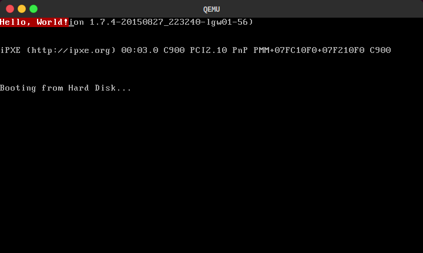

实验准备
Contents |
实验背景
实验目的
实现一个可以在硬件模拟器上启动并运行的简单的操作系统内核，并编写一个简单的小游戏作为用户程序让这个内核加载并运行。
实验平台
我们主要在 Linux 下进行开发，主要使用 Linux 下的开发工具链，主要有：
- make：项目构建工具
- gcc：编译器
- ld：链接器
- objcopy: 用于抽取 Boot Loader 的代码
- dd: 用于制作磁盘镜像
- gdb: 调试器
- qemu: 硬件模拟器
我们实验所制作的内核，是能够在传统的 BIOS 主板上运行的，但是直接在硬件上运行不利于我们进行调试，所以我们使用 QEMU 作为硬件模拟平台。QEMU 是一个硬件模拟器，可以模拟模拟多种架构的计算机系统（不仅仅是 CPU，还包括了显示器、磁盘等完整的外设）。我们将把独立编译出来的 Boot Loader、 Kernel、 Game（实验一中 Kernel 和 Game 要作为一个整体一起编译）制作成磁盘文件，QEMU 将这个磁盘文件作为其运行时的磁盘，从中读取引导扇区并执行。
实验准备
安装 QEMU
我们假设你使用的环境是 Debian 7.8 的最小安装版本（即断网安装netinst版本镜像），32位。并假设你的系统安装有 sudo，包管理工具为 apt-get，并且能连结到外网。
执行以下指令以安装 QEMU
sudo apt-get update # 更新源
sudo apt-get install qemu # 安装 QEMU
安装完成后，输入命令qemu-system-i386观察我们需要的 QEMU 是否成功安装上了。虽然默认有 qemu 命令，但是保险起见，我们主要使用 qemu-system-i386。
在 Debian 7.8 下从官方源安装的 QEMU 版本在 1.x.x，如果你想使用最新的 QEMU，可以按这个教程自行编译。
QEMU 启动后会弹出一个图形窗口作为模拟的显示器。如果你的终端模拟器不支持窗口转发，那么会出现如下的错误提示：
Could not initialize SDL(No available video device) - exiting
在 PA 中有关于窗口转发的相关说明(链接)，这里不再赘述。另外推荐一个 Windows 下的终端模拟器：MobaXterm，自带 X server，默认开启窗口转发功能。
运行 QEMU
简单来说， QEMU 的命令行语法是这样的：
qemu-system-i386 [options] disk_image
其中 options 是一些设置选项，暂时不需要关注，但是 disk_image 是必须的。disk_image 即磁盘镜像，它代表一个磁盘，你可以把任意一个文件当做磁盘镜像作为 QEMU 的输入参数。当这个文件的第 511 个字节是 0x55，同时第 512 个字节是 0xAA 时， QEMU 会将这个磁盘视作可引导的磁盘，并将这个文件的前 512 个字节当做机器指令从头开始执行（这里的说法很不严谨，更详细的内容请参考实验一的讲义），这样的前 512 个字节叫做引导扇区。
下面我们来写一个在 QEMU 里输出 "Hello, World!" 的程序，帮助你了解制作一个有实际功能的可引导的磁盘镜像的基本流程。首先我们有这样一份汇编代码：
.code16 # 告诉 gcc 之后生成 16 位机器指令
# 开启保护模式之前 QEMU 只能执行 16 位机器指令
.globl start # 将符号 start 暴露给链接器
start: # start 表示代码的起始地址
cli # 关中断
mov $0x13, %ah # 设置模式：显式字符串
mov $0x01, %al # 设置显式模式：(1) 使用 BL 指定的样式 (2) 更新光标
mov $0x00, %bh # 设置代码页，与字体相关； QEMU 下仅第一个代码页可用
mov $0x4F, %bl # 设置字符样式：红底白字无高亮
mov $(end-str), %cx # 优雅地计算字符串的长度
mov $str, %dx # 将 ES:BP 指向字符串 (Step 1)
mov %dx, %bp # 将 ES:BP 指向字符串 (Step 2)
mov $0x00, %dh # 首字符输出在第 1 行
mov $0x00, %dl # 首字符输出在第 1 列
int $0x10 # BIOS 中断，VGA 相关服务
loop: # loop 表示下面这条指令的首地址
jmp loop # 无限循环，防止继续执行超出内存
str: # str 表示字符串首地址
.ascii "Hello, World!"
end: # end 表示字符串之后的地址，用于计算长度
将其保存为 mbr.S 后，用如下的命令编译并链接：
gcc -m32 -c mbr.S
ld -m elf_i386 -e start -Ttext=0x7C00 -o mbr mbr.o
编译链接选项的具体解释如下：
-m32 防止在 64 位机器上生成 64 位机器指令，因为我们的目标平台是 32 位的 i386；
-c 表示只编译不链接，因为我们需要特殊的链接姿势；
-m elf_i386 表示生成 32 位的 ELF 格式可执行文件；
-e start 表示 start 作为程序入口地址， start 必须外部可见，即是非 static 修饰的 C 符号或 .globl 修饰的 AT&T 格式的汇编代码符号；
-Ttext=0x7C00 表示链接脚本，这里只是简单地让代码段从 0x7C00 开始，因为这里是实际刚开始执行这 512 个字节执行时 CS:IP 指向的地址，而代码中 mov $(end-str), %cx 使用了绝对寻址，所以需要设定好起始地址；
-o mbr 生成文件为 mbr
生成了具有实际意义的机器执行序列后，下面就该制作 512B 大小的引导扇区了，不过别急，我们先看看这个生成的可执行文件有多大：
stat mbr
File: ‘mbr’
Size: 3549 Blocks: 8 IO Block: 4096 regular file
竟然有 3.5KB (╯°Д°)╯︵ ┻━┻
┬—┬ ノ( ' - 'ノ) 这主要是因为 ld 按当前系统的标准链接了很多与运行环境相关的代码，以及 ELF 文件的一些描述信息。这些对于在操作系统下跑的用户程序来说是必要的，但是对于在裸机上跑的程序来说，这些都是无关的信息，所以我们首先要用如下的命令把需要的机器指令序列提取出来：
objcopy --strip-all --only-section=.text --output-target=binary mbr mbr
这个命令的具体解释如下：
--strip-all 去掉符号表等信息
--only-section=.text 只拷贝代码段的内容
--output-target=binary 生成纯二进制
mbr mbr 前者为输入，后者为输出
然后我们用特殊的反汇编姿势查看我们的引导扇区：
objdump -D -b binary -mi386 -Maddr16,data16 mbr
mbr: file format binary
Disassembly of section .data:
00000000 <.data>:
0: b4 13 mov $0x13,%ah
2: b0 01 mov $0x1,%al
4: b7 00 mov $0x0,%bh
6: b3 4f mov $0x4f,%bl
8: b9 0d 00 mov $0xd,%cx
b: ba 17 7c mov $0x7c17,%dx
e: 89 d5 mov %dx,%bp
10: b6 00 mov $0x0,%dh
12: b2 00 mov $0x0,%dl
14: cd 10 int $0x10
16: f4 hlt
17: 48 dec %ax
18: 65 gs
19: 6c insb (%dx),%es:(%di)
1a: 6c insb (%dx),%es:(%di)
1b: 6f outsw %ds:(%si),(%dx)
1c: 2c 20 sub $0x20,%al
1e: 57 push %di
1f: 6f outsw %ds:(%si),(%dx)
20: 72 6c jb 0x8e
22: 64 fs
23: 21 .byte 0x21
由于此时已经无法区分数据和代码了，所以后面的字符串也被当做代码来解释，在 QEMU 中是如此，所以要在进入数据区域之前跳转到别的地方或者使用 hlt 或者 jmp 阻止 CPU 继续往下执行。
在看一下文件大小：
stat mbr
File: ‘mbr’
Size: 36 Blocks: 8 IO Block: 4096 regular file
只有 36B，可以愉快地制作引导扇区了。
关于制作引导扇区，只需要知道当前文件的大小，然后在文件末尾随便写入任意字节直到文件大小达到 510B，此时依次写入 0x55， 0xAA，达到 512B。
这里提供一个 Ruby 版本的生成引导扇区的脚本，当然，只要遵循上述流程，使用任意语言都可以，一般来说，脚本语言或者命令行比较方便。 Ruby 一般不默认安装， sudo apt-get install ruby 即可。
mbr = open(ARGV[0], "a")
mbr.write("\x00" * (510 - mbr.size))
mbr.write("\x55\xAA")
mbr.close
将上述代码保存成 mkmbr.rb，然后执行命令 ruby mkmbr.rb mbr，之后就可以用 qemu-system-i386 查看运行效果：

下面提供关于上述文字输出的参考资料：
VGA相关的BIOS中断
显示字符串的中断服务
字符显式格式
字符颜色表
按上面的步骤，根据参考资料修改代码，尝试不同的输出效果，以熟悉 QEMU、汇编代码和引导扇区的制作。